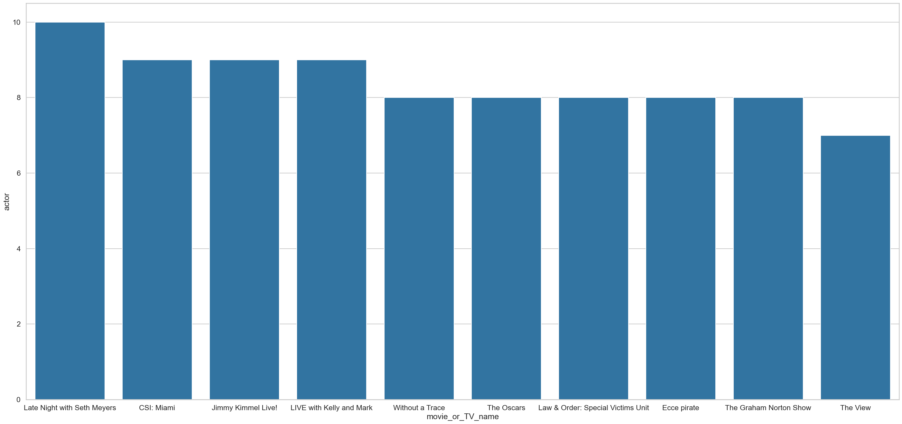

import pandas as pd
import seaborn as sns
import matplotlib.pyplot as plt
df = pd.read_csv("results.csv")Webscraping with Scrapy!
We will learn how to scrape the web using the scrapy package. We’ll explore this by figuring out how to acquire data from a movie website.
We will start by creating a file named “tmdb_spider.py”. From there we will add these lines:
# to run
# scrapy crawl tmdb_spider -o movies.csv
import scrapy
class TmdbSpider(scrapy.Spider):
name = 'tmdb_spider'
start_urls = ['https://www.themoviedb.org/movie/872585-oppenheimer']As you can see from the starting url, we will be analyzing the movie Oppenheimer. What we plan to do is to make a recommender which uses information of the cast to recommend new movies. To do this, we need to create “spiders,” which will “crawl” the web and extract the information we need! We will have three methods which each do an important task. Our first class method will be the easiest:
def parse(self, response):
box = response.css("section.panel.top_billed.scroller")
button = box.css("p.new_button")
link = "https://www.themoviedb.org" + button.css("a::attr(href)").get()
yield scrapy.Request(url=link, callback=self.parse_full_credits)This parse method is responsible for starting from the page of the movie and navigating to the Full Cast & Crew page. Let’s go through this code line by line. Our response would be the request of the page specified in the start url. In other words, this is the request to the Oppenheimer movie description page. If we inspect element on the page, we can see a box where there is a Full Cast & Crew button. Perfect! We save that as the variable box. We then access that button through the next line and save it as button. We then save the whole thing into a link. We must note that the link that this returns is a relative link, which means we need to manually add the beginning of the address like we have done above. Once we have saved the link we can yield a scrapy.Request object. This takes in the arguments url, which is self-explanatory, and callback. We use callback to call our next function: parse_full_credits. This means that we will pass the Full Cast & Crew page into this method, so we will be looking at that one next.
def parse_full_credits(self, response):
actor_links = response.css("ol.people.credits").css("a::attr(href)").getall()
for actor_link in actor_links:
link = "https://www.themoviedb.org" + actor_link
yield scrapy.Request(url=link, callback=self.parse_actor_page)This one doesn’t look too complicated either. For this method, we know we start from the page containing the cast. Therefore, we want to get links to all the actors on this page and pass those into the parse_actor_page method. We first start by saving the links into the variable actor_links. We make sure to use .getall() so that we get a list of all the actor links. Then, we iterate over all of the links and for each link, we call the scrapy.Request contructor and pass it into parse_actor_page. Now let’s take a look at that final method.
def parse_actor_page(self, response):
actor = response.css("h2.title a::text").get()
movies = response.css("table.card.credits a.tooltip bdi::text").getall()
for movie in movies:
yield {
"actor": actor,
"movie_or_TV_name": movie
}There’s a little bit more that we need to look at. We need to extract the actor’s name in the first line, which we get from one of the headers. Then we find an html card which contains the names of the movies the actor has acted in, and then we extract those names and save them into movies. We then iterate over each movie, and yield a mapping, where the actor is mapped to the movie. When we yield this, we can create a .csv file which will have a column of actors and their corresponding movies. From there on we can create our recommender. Before we do that, let’s take a look at the bash command we need to run first.
scrapy crawl tmdb_spider -o results.csvNote the name tmdb_spider. That’s the value of the variable name we had in the beginning! The -o means that we would open a file named results.csv. If the file doesn’t exist yet, it’ll automatically be created. Once we have our csv file, we can open it using pandas!
df| actor | movie_or_TV_name | |
|---|---|---|
| 0 | Cillian Murphy | Small Things Like These |
| 1 | Cillian Murphy | Untitled Peaky Blinders Film |
| 2 | Cillian Murphy | Peaky Blinders: A Peek Behind the Curtain |
| 3 | Cillian Murphy | Kensuke's Kingdom |
| 4 | Cillian Murphy | Oppenheimer |
| ... | ... | ... |
| 3922 | Emily Blunt | Kate Warne |
| 3923 | Emily Blunt | Pain Hustlers |
| 3924 | Emily Blunt | The English |
| 3925 | Emily Blunt | Don Jon |
| 3926 | Emily Blunt | Your Sister's Sister |
3927 rows × 2 columns
This is great! As you can see, we have a list of movies/TV shows with their corresponding actors. Now, we want to group them up by movies and see how many common actors there are. We’ll then sort these by number of actors in descending order. Based on this, we can recommend movies to people!
movies = df.groupby("movie_or_TV_name")["actor"].count().reset_index()movies = movies.sort_values(by="actor", ascending=False)
movies.head(10)| movie_or_TV_name | actor | |
|---|---|---|
| 1729 | Oppenheimer | 81 |
| 1380 | Late Night with Seth Meyers | 10 |
| 445 | CSI: Miami | 9 |
| 1275 | Jimmy Kimmel Live! | 9 |
| 1358 | LIVE with Kelly and Mark | 9 |
| 3050 | Without a Trace | 8 |
| 2610 | The Oscars | 8 |
| 1386 | Law & Order: Special Victims Unit | 8 |
| 746 | Ecce pirate | 8 |
| 2449 | The Graham Norton Show | 8 |
This is good news, and we can see that our code worked! We can tell this by looking at the top movie on our list, which is Oppenheimer! That’s no coincidence as the movie where we got all the actors from would definitely have the highest amount of actors from that movie. So the non-trivial ones would actually be the ones right below Oppenheimer, and it looks like Tenet would be the first movie to recommend.
sns.set_style("whitegrid")
sns.set_context("talk")
plt.figure(figsize=(35,16))
sns.barplot(data=movies.head(11)[1:], x="movie_or_TV_name", y="actor", dodge=True)
plt.show()
Here is a visualization of the first 10 movies/shows that we’d recommend watching if your favorite movie is Oppenheimer. Enjoy!